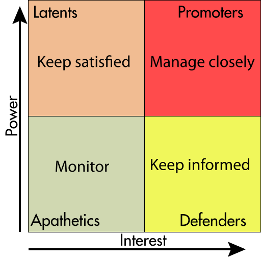
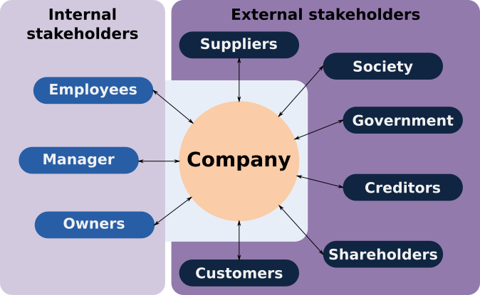
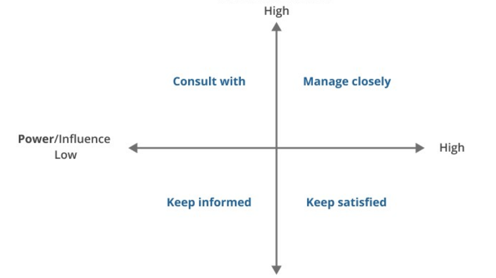
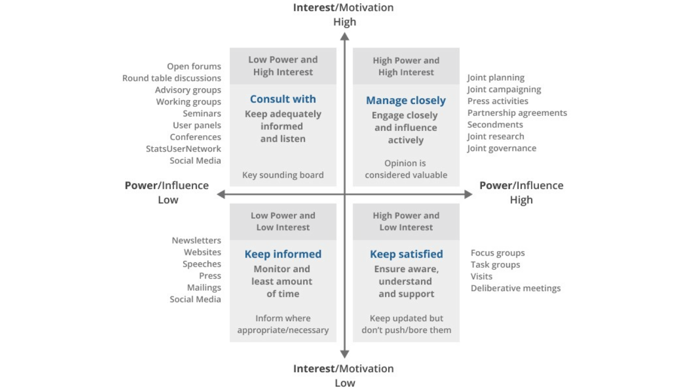
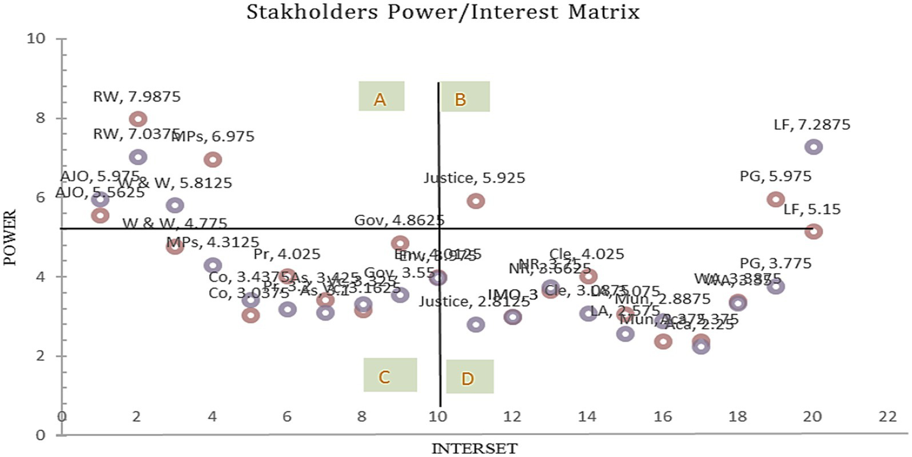

Stakeholder map
About
A stakeholder map is a visual inventory of all the people and organizations with a stake in a product, service, or decision — including users, clients, operators, internal teams, regulators, partners, and anyone else who can affect or is affected by the experience. Typical layouts arrange actors by proximity to the user, by level of influence, or in a power/interest grid. The map makes visible who needs to be involved in research, whose needs are currently being underserved, and where competing interests might create design tensions. In complex service contexts, a stakeholder map is often the first shared artifact a team produces.
When to use
Use a stakeholder map at the beginning of any project involving multiple actor types — especially service design, organizational design, public sector, or healthcare contexts. It should precede research planning to ensure that all relevant perspectives are included in the inquiry, not just the most visible ones.
When not to use
Do not use a stakeholder map as a substitute for actually talking to stakeholders. The map identifies who matters; research with those people reveals what matters. Also avoid creating maps so inclusive that they become unusable — prioritize actors with genuine influence on the experience.
References
Examples
Click any example to view full size and visit the original source.




